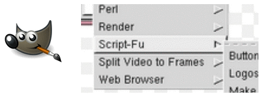
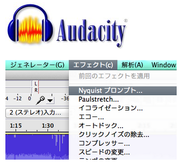

実用的なLisp方言『Script-fu』『Nyquist』『nu』
久しぶりの更新です。いつの間にか冬になり、そしてもうすぐ今年も終わっちゃいますねー。
私にとってこの一年は、苦労の多い一年でした。皆さんはどうですか？
さて本題ですが、ここ最近意外なところでLispに出会ったので紹介します。
Script-fu (GIMP)

Script-fuは、GIMPの操作を自動化するためのスクリプト言語です。 http://docs.gimp.org/ja/gimp-concepts-script-fu.html
GIMPがとても有名なので、一度上図のようにメニューに"script-fu"の文字を見たことがある人も多いかもしれません。
GIMPではScript-fuの他にPythonとPerlも使えるそうなのですが、最初から入っていたのはScript-fuなのだそうです。
余談ですが、後で紹介するNyquistも、有名なAudacityで使われていますよね。オープンソースソフトウェアではLisp好きが多いんでしょうか。（笑）
ところで、Script-fuはSchemeをベースに作られているそうですが、詳しい実装は不明です。
Script-fuのコード例
http://www.adp-gmbh.ch/misc/tools/script_fu/ex_09.htmlより転載
; resize_image.scm
(define (resize-image filename-in filename-out new-width new-height)
(let* ((image (car (gimp-file-load RUN-NONINTERACTIVE filename-in "")))
(drawable (car (gimp-image-active-drawable image))))
(gimp-image-scale image new-width new-height)
(gimp-file-save RUN-NONINTERACTIVE image drawable filename-out ""))
)Nyquist (Audacity)

かなり意外な気がしますが、Audacityのスクリプト言語です。 http://audacity.sourceforge.net/help/nyquist?lang=ja
音声関係のソフトで何をスクリプトするのと思われるかもしれませんが、Nyquistは、VSTみたいなエフェクトやジェネレーターをコンパイルなしで作れるスクリプトです。
自分でプログラムしたものがすぐ実用的なエフェクトになるので、個人的には画期的だと思います。GUIも作れてしまうところもVSTに近いので驚きます。
Nyquistは、XLisp2.0をベースにして作られているようで、書き方はCommon Lispとよく似ています。XLispは軽量なLispとして作られているのですが、マクロまでちゃんとあるのは凄いですね。
Lispはどんどん拡張していける言語なので、こういうDSLとしてLispを使うのは良い使い方だと思います。
Nyquistのコード例
http://wiki.audacityteam.org/wiki/Nyquist_Effect_Plug-insより転載、整形
;nyquist plug-in
;version 1
;type process
;name "Center Pan Remover..."
;action "Removing center-panned audio..."
;info "Center Pan Remover by David R. Sky\nReleased under terms of the GNU Public license"
;control bc "Invert band or channel" int "0=band 1=channel" 1 0 1
;control above "Remove frequencies above..." int "hz" 500 20 20000
;control below "Remove frequencies below..." int "hz" 2000 20 20000
; Center pan Remover by David R. Sky November 12, 2004
; Released under terms of the GNU Public License
; http://www.opensource.org/licenses/gpl-license.php
; Select either band of frequencies to remove
; (define frequency range),
; or invert one channel
; result is still stereo but sounds mono
; (both channels have been panned to center)
(defun butterfly (sound width)
(vector
(sum (mult (aref sound 0) (sum width 1) 0.5)
(mult (aref sound 1) (sum width -1) -0.5))
(sum (mult (aref sound 1) (sum width 1) 0.5)
(mult (aref sound 0) (sum width -1) -0.5))))
(defun invertband (s above below)
(vector
(aref s 0)
(sum (mult -1 (highpass2 (lowpass2 (aref s 1) below) above)))
(highpass2 (lowpass2 (aref s 1) above) below)))
(defun invertchan (s)
(vector
(aref s 0)
(mult -1 (aref s 1))))
(cond
((= bc 0) ; invert band of frequencies
(butterfly (invertband s above below) 0))
((= bc 1) ; invert one channel
(butterfly (invertchan s) 0)))nu
最後に紹介するのは、Mac/iOSの基本的なフレームワークであるCocoaを使ったプログラミングができるLisp方言のnuです。 http://programming.nu/
nuはObjective-Cで書かれているため、Objective-Cのクラスなどが利用できます。
最新のバージョンでiOSに対応したため、オープンソースでObjective-C以外の言語を使えて、かつCocoaなどのコアなクラスを使えるものとしては珍しいので、そういう意味でもとても実用的だと思います。
nuはObjective-Cに特化した独自のシンタックスを持っていますが、マクロの書き方などを見る感じだとCommon Lispに近いかなと思います。
nu自体に定義されているCocoaのクラスは少ないのですが、実はCocoaのブリッジサポートという仕組みを使ってアクセスできるそうです。（私も詳しい仕組みはわかっていないのですが…）
例えば、QuartzやOpenGLなどのプログラミングもnuを使って出来るということですね。
nuのコード例
https://github.com/itfrombit/nuopenglcubedemoより転載
;; @file main.nu
;; @discussion Entry point for a Nu program.
;;
;; @copyright Copyright (c) 2008 Jeff Buck
;; The shell of this program was mostly lifted from
;; Tim Burks' Benwanu example.
(load "nu")
(load "cocoa")
(load "menu")
(load "console")
(load "nuopenglcube")
(set SHOW_CONSOLE_AT_STARTUP t)
(class ApplicationDelegate is NSObject
(- (void) applicationDidFinishLaunching: (id) sender is
(build-menu nuopengl-application-menu "Nu OpenGL Cube Demo")
(set $controllers (NSMutableArray array))
(self newView:self)
(set $console ((NuConsoleWindowController alloc) init))
(if SHOW_CONSOLE_AT_STARTUP ($console toggleConsole:self)))
;; Handles the "New" menu item and the initial view creation
(- (void) newView:(id) sender is
($controllers << ((NuOpenGLWindowController alloc) init)))
;; Close the application when the window is closed
(- (BOOL) applicationShouldTerminateAfterLastWindowClosed: (id) app is
YES)
;; Menu handlers. Forward on to the view
(- (void) resetCamera:(id) sender is
($view resetCameraAndUpdateProjection))
(- (void) startAnimation:(id) sender is
($view startAnimation))
(- (void) stopAnimation:(id) sender is
($view stopAnimation)))
(set nuopengl-application-menu
'(menu "Main"
(menu "Application"
("About " action:"orderFrontStandardAboutPanel:")
(separator)
(menu "Services")
(separator)
("Hide " action:"hide:" key:"h")
("Hide Others" action:"hideOtherApplications:" key:"h" modifier:(+ NSAlternateKeyMask NSCommandKeyMask))
("Show All" action:"unhideAllApplications:")
(separator)
("Quit " action:"terminate:" key:"q"))
(menu "Control"
("Reset Camera" action:"resetCamera:" target:$delegate key:"r")
(separator)
("Start Animation" action:"startAnimation:" target:$delegate key:"s")
("Stop Animation" action:"stopAnimation:" target:$delegate key:"d"))
(menu "Window"
("Minimize" action:"performMiniaturize:" key:"m")
(separator)
("Bring All to Front" action:"arrangeInFront:"))
(menu "Help"
(" Help" action:"showHelp:" key:"?"))))
;; install the delegate and keep a reference to it since the application won't retain it.
((NSApplication sharedApplication) setDelegate:(set $delegate ((ApplicationDelegate alloc) init)))
((NSApplication sharedApplication) activateIgnoringOtherApps:YES)
(NSApplicationMain 0 nil)まとめ
「Lispは実用的ではない」と教えられることがあると聞きますが、この例を見るとLispは実際のソフトウェアに使われているということがよくわかります。
Lispはスクリプト言語でありながら強力な機能を持っているので、スクリプト言語として優れていると思いますが、知名度の割にあまり利用されていないのが残念です。
こういうところから、もっとユーザが増えるといいなと思います。

オーム社
売り上げランキング: 986,591
 | CSSだけで美しいレスポンシブデザインを実現『Pure』 |
 | 静的サイトジェネレータ『Octopress』の使い方 |
 | 完全に無料なGithubブログを始める方法 |
 | 無料ブログサービスの大きな落とし穴 |
 | PHPの動的キャストで完全にハマった |